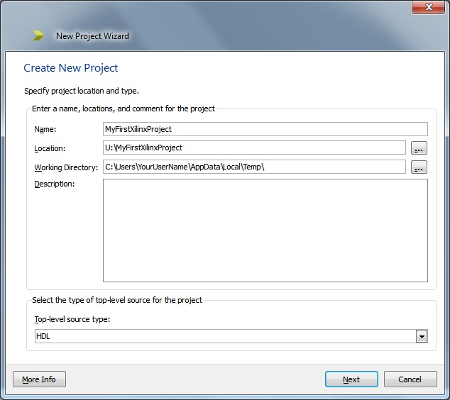
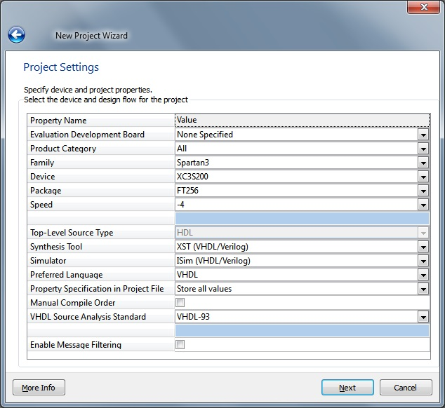

EEE6225 Systems Design
| Tutorial 1: Introduction to VHDL and Xilinx ISE | |||||||||||||||||||||||||||||||||||||||||||||
| Creating a project | |||||||||||||||||||||||||||||||||||||||||||||
| On starting up the Project Navigator, create a
new project, File > New Project,
giving the project a sensible name (eg MyFirstXilinxProject), and select location somewhere in
your user account. It is strongly recommended that you set the location to be in your U: drive (and backup your design files elsewhere too).
The tools have 'difficulty' with network drives so check that the 'working directory' is set to: C:\Users\YourUserName\AppData\Local\Temp\ if this is not the case the iSim simulator may fail to run. Set the Top-Level Source Type to be HDL and finally click Next. This is shown below (Figure 1). 
Figure 1. New project create project dialogue box Settings for the next dialogue box (Figure 2) are shown in Table 1 and depend on the target FPGA development board (NOTE: they can be changed later). Once these values have been entered click Next |
|||||||||||||||||||||||||||||||||||||||||||||
| Table 1. Properties for the New Project dialogue box |
|||||||||||||||||||||||||||||||||||||||||||||
 Figure
2. Project settings dialogue box
|
|||||||||||||||||||||||||||||||||||||||||||||
| Once all the fields have been entered correctly click on Next. A summary screen is displayed of the project settings; click on Finish. A project with an 'Empty View' should be displayed under the Hierachy tab. Continue on to Creating a new design module |